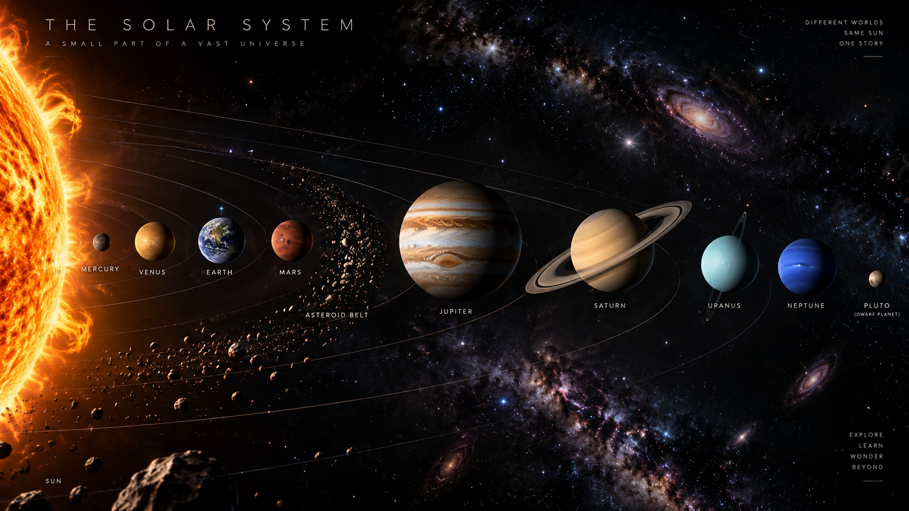

Mercury
TerrestrialNo atmosphere to hold heat, so the day side reaches 430 °C while the night side falls to −180 °C. The largest temperature swing of any planet.
- Diameter
- 4,879 km
- Year
- 88 days
- Moons
- 0
01 Region · Heliosphere
One ordinary star, eight worlds, and a frozen archive of everything left over from the day they formed. This is the only place in the universe we have ever visited.
Orion Arm 26,000 ly from galactic centre Orbital velocity 230 km/s
Everything here condensed out of a single collapsing cloud of gas and dust roughly 4.6 billion years ago. Gravity pulled most of it into the centre, pressure and temperature climbed until hydrogen began fusing, and a star switched on.
The leftovers — less than a seventh of one percent of the total mass — flattened into a spinning disc and began sticking together. Close to the new star only rock and metal could survive the heat, so the inner worlds came out small and dense. Further out, past the frost line, ice was abundant, and the planets that formed there grew large enough to hold onto hydrogen and helium directly.
That single accident of temperature is why our Solar System has two completely different kinds of planet, and why the boundary between them falls almost exactly where the asteroid belt sits today.

02 Architecture
The planets do not orbit at random angles. They all travel within a few degrees of the same flat disc — a fossil of the spinning cloud they were born from.
Fig 01 Orbital radii and body sizes compressed for legibility. Revolution periods are scaled but correctly ordered — Mercury really does lap Neptune roughly 686 times.
Fig 02 True mean distances on a base-10 axis. Origin marks the Sun.
03 Primary
G2V · Main sequence
It holds 99.86% of the mass of the entire Solar System. Every planet, moon, comet and grain of dust you will read about on this page is a rounding error orbiting the leftovers.
Each second, roughly 600 million tonnes of hydrogen fuse into helium in its core. The energy released takes tens of thousands of years to fight its way out to the surface, then eight minutes and twenty seconds to reach your eyes.
Fig 03 Rendered representation. Granulation, limb darkening, a sunspot group and two limb prominences are drawn to indicate real photospheric features, not to depict a specific observation.
04 Major bodies
Read outward. The four terrestrial worlds are small, dense and close together. Past the belt, everything changes character: the giants are enormous, cold, ringed, and surrounded by their own miniature systems of moons.
No atmosphere to hold heat, so the day side reaches 430 °C while the night side falls to −180 °C. The largest temperature swing of any planet.
Hotter than Mercury despite being further out. A runaway carbon dioxide greenhouse holds the surface at 465 °C under 92 atmospheres of pressure.
The only world known to hold liquid water at its surface, and the only one known to hold life. Both facts depend on a very narrow range of distance and atmosphere.
Holds both the tallest volcano and the deepest canyon in the Solar System. Olympus Mons rises 22 km; Valles Marineris runs 4,000 km long.
More massive than every other planet combined, twice over. The Great Red Spot is a storm wider than Earth that has been running for at least 190 years.
The rings span 280,000 km but average only about 10 metres thick. They are almost pure water ice, and they are probably younger than the dinosaurs.
Tipped 98 degrees, so it rolls along its orbit rather than spinning upright. Its rings run vertically from our point of view, and each pole gets 42 years of darkness.
The windiest place in the Solar System, with storms clocked at 2,100 km/h. It was found by mathematics before anyone pointed a telescope at it.
05 To scale
Illustrations almost always enlarge the small planets so they stay visible. This one does not. Jupiter is 29 times wider than Mercury, and that is what 29 times actually looks like.
Fig 04 Equatorial diameters, one shared scale. Distances are not represented — at this size Neptune would sit about four kilometres to the right.
06 Dwarf planets
A dwarf planet orbits the Sun and has enough gravity to pull itself into a sphere, but has never cleared the debris out of its own orbital neighbourhood. That last clause is the entire reason Pluto was reclassified in 2006 — nothing about Pluto changed, only the definition.
39.5 AUKuiper Belt
67.8 AUScattered Disc
43.1 AUKuiper Belt
45.4 AUKuiper Belt
2.77 AUAsteroid Belt
Fig 05 Mean orbital distance shown. Haumea is drawn out of round on purpose — it spins once every four hours and that has genuinely deformed it into an ellipsoid.
07 Natural satellites
Ganymede and Titan are both wider than Mercury. Several of these are more promising places to look for life than any planet other than Earth, because tidal heating keeps liquid water under their ice.
Diameter, relative to Ganymede Mercury = 4 879 km
08 Small bodies
Rock and metal that Jupiter's gravity never allowed to assemble into a planet. Millions of bodies, but their entire combined mass is only about 3% of the Moon's — and Ceres alone accounts for a quarter of it.
Fig 06 The main belt is mostly empty space. Spacecraft cross it routinely without manoeuvring.
Ice, dust and rock preserved unchanged since the Solar System formed. Approaching the Sun, they sublimate and grow two separate tails that point in two different directions.
Fig 07 The blue ion tail is blown straight back by the solar wind. The broader dust tail lags along the orbit and curves.
09 Outer system
Past Neptune the Solar System keeps going for a very long time. The Kuiper Belt is a disc of ice; far beyond it, the Oort Cloud is a spherical shell that reaches roughly a quarter of the way to the next star. Every scale below is a power of ten, because a linear axis would put everything you have read about so far inside the first pixel.
Base-10 axis, 1 AU at origin 1 AU = 149 597 871 km
Everything on this page orbits a single unremarkable star in one arm of one galaxy. Next, the stars themselves.